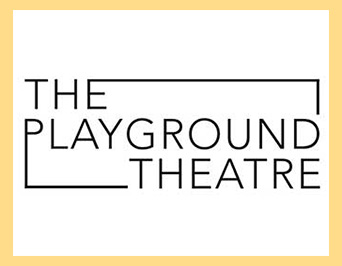

The Playground Theater is a 501(c)3 non-profit, artist-led theater with its roots in improvisational comedy. Our mission is to provide a home for artists to grow as writers, directors, performers, producers, and people. We are committed to entertaining audiences with successful shows that reflect our core values: diversity, freedom, opportunity, and outreach.